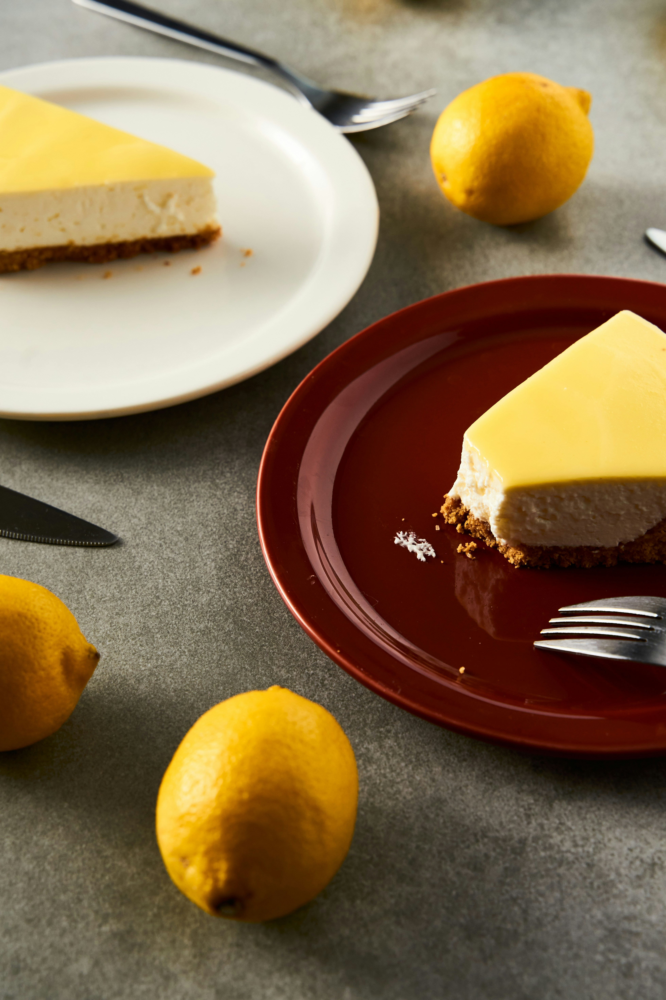

Yemek tutkunlarının buluşma noktası olan sitemize hoş geldiniz! Burada, mutfakların büyülü dünyasına adım atacak, damak tadınıza hitap eden tariflerle tanışacaksınız. Her bir tarifimiz, özenle seçilmiş malzemelerle hazırlanmış, sizi ve sevdiklerinizi keyifli bir yemeğe davet ediyor. İster pratik, hızlı yemekler arıyor olun, ister özenle hazırlanmış özel sofralar için ilham arayın, doğru yerdesiniz.
Daha Fazla Tarif İçin Tıklayınız
Muzlu Cheesecake

Malzemeler:
Cheesecake Karışımı İçin:
- 400 gram krem peynir (oda sıcaklığında)
- 1 su bardağı şeker
- 2 adet yumurta
- 1 su bardağı muz püresi (yaklaşık 2 olgun muz)
- 1 çay bardağı ekşi krema (veya yoğurt)
- 1/4 su bardağı un
Süsleme İçin:
- 1-2 adet olgun muz (dilimlenmiş)
- 2 yemek kaşığı bal (isteğe bağlı)
Yapılışı:
- Tabanı Hazırlama:
- Fırını 180°C (350°F) derecede önceden ısıtın.
- Bisküvileri bir mutfak robotunda iyice ezip un haline getirin. Üzerine eritilmiş tereyağını ekleyin ve karıştırın.
- Karışımı 23 cm çapında kelepçeli bir kek kalıbına dökün ve tabana iyice bastırarak düzleştirin.
- Önceden ısıtılmış fırında yaklaşık 10 dakika pişirin. Ardından fırından çıkarın ve soğumaya bırakın
- Cheesecake Karışımını Hazırlama:
- Krem peyniri bir mikserle pürüzsüz olana kadar çırpın. Üzerine şekeri ekleyin ve iyice karıştırın.
- Yumurtaları tek tek ekleyin ve karışım tamamen homojen olana kadar çırpın.
- Muz püresini ve vanilini ekleyin, karıştırın.
- Pişirme:
- Cheesecake karışımını, pişmiş bisküvi tabanının üzerine dökün.
- Önceden ısıtılmış fırında 50-60 dakika kadar pişirin. Cheesecake’in ortası hafifçe sallanabilir ama dış kısmı sertleşmelidir.
- Fırını kapatın ve cheesecake’i fırın kapalı olarak 1 saat soğumaya bırakın.
Deneyenler Yorumluyor!
-

Elif.y
“Bu muzlu cheesecake tarifi tam anlamıyla mükemmel! Yapımı oldukça kolay ve sonuç gerçekten etkileyici. Krem peynirin ve muzun mükemmel uyumu harika bir tat oluşturmuş. Tabana eklediğim bisküvi, cheesecake'in üzerine döktüğüm muz dilimleriyle birleştiğinde kesinlikle favorim oldu. Misafirlerim de çok beğendi. Kesinlikle tekrar yapacağım!”
-

Melisa.K
“Muzlu cheesecake’in bu kadar kolay ve lezzetli olacağını hiç beklemiyordum. Muz püreleri kekin içinde homojen şekilde dağılmış ve tatlılık ideal seviyede. Fırından çıktıktan sonra soğuması biraz zaman alıyor ama beklemeye değer. Süslemesi için eklediğim muz dilimleri ve bal ile harika bir sunum oldu. Ailemin beğenisini kazanmak garanti!
-

Yıldız M.
“Bu cheesecake’i yaparken gerçekten keyif aldım. Tarife sadık kaldım ve sonuç mükemmel oldu. Tadı ve dokusu tam istediğim gibi. Fırında pişirme süresi de doğruydu. Üzerine koyduğum muz dilimleri ve bal ile tatlandırdım ve büyük bir hit oldu! Mutlaka tavsiye ederim.”